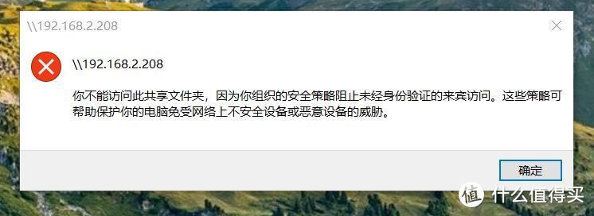

不要使用 SMB1
SMB1 可以追溯到20世纪80年代 IBM 和 微软的DOS 时代
距离今天已经有三十多年的时间，当时计算机安全还不存在，它在拦截攻击方面有重大的架构问题
如今版本的 windows 10/11 都默认禁用了 SMB1，因此如果还在使用这一协议的话，强烈建议关闭
安全使用 SMB 共享的步骤
这里提供一个简单的，可以在工作或家庭的局域网中显著提高安全性且不会太复杂的 SMB 共享设置方法
I. 新建一个用户专门用于共享文件的授权，并设置此用户的权限
II. 设置网络共享和系统安全的相关设置
III. 开启共享，授权指定用户
I. 创建专用的用户
新建一个本地用户，此用户只用在 SMB 共享
右键我的电脑⇒ 管理⇒ 本地用户和组⇒ 用户⇒ 右键空白处，点击“新用户”
新建账号为 "joker" 的用户为例，相关设置如下：
只用于共享，因此设置不能更改密码，密码不会过期
II. 设置网络共享和系统安全的相关设置
1. 禁用“启用不安全的来宾登录”
默认情况下，在 SMB2 和 SMB3 版本中，Windows 10 / 11 系统下是禁用此服务的，
如果开启了建议关闭，步骤如下：
按住 win + R，在“运行”窗口中输入
gpedit.msc, 打开“本地组策略编辑器”：
管理模板⇒ 网络⇒ lanman工作站⇒ 启用不安全的来宾登录⇒ 已禁用

为什么要禁用？
在使用 SMB1 协议去共享文件时，虽然别人访问你的共享文件时 SMB1 会去验证访问者提供的用户证书是否有效，但是如果验证此证书为无效之后，SMB1 将会尝试开启“来宾”（guest）登录模式，允许访问者以“来宾”（guest）的身份进行登录。
换句话说，就相当于“我不认识你，也不知道你是好人还是坏人，但是来者皆视为宾客”。

上图产生的错误，就是因为我们禁用了“来宾”身份的登录，
但是不要认为这是不好的结果，恰恰相反，禁用此项功能就是为了实现更好地保护SMB 共享资料
2. 合理分配用户权限
按住 win + R，在“运行”窗口中输入
secpol.msc, 打开 “本地安全策略”设置窗口：


（1）授予用户“从网络访问此计算机”的权限：
本地策略⇒用户权限分配
从网络访问此计算机：只有授权的用户能够通过网络来访问到本机上的共享文件资源（包括共享的打印机）
（2）限制此用户登录到系统上：“拒绝本地登录”和“拒绝通过远程桌面服务登录”
本地策略⇒用户权限分配⇒从拒绝本地登录
拒绝本地登录：即不允许特定用户在本电脑上进行登录
拒绝通过远程桌面服务登录：即不允许此账户使用远程桌面登录到本系统
设置好之后，joker 用户就无法本地登录到系统，同时也无法通过远程桌面的形式登录到本机，因为目的就是让 joker 只能用来使用 SMB 共享。
3. 本地安全选项设置
请参考下图的设置进行设置：
按住 win + R，在“运行”窗口中输入
gpedit.msc, 打开“本地组策略编辑器”：
windows设置⇒ 安全设置⇒ 本地策略⇒ 安全选项⇒ 已禁用

（1）Microsoft网络服务器端：对通信进行数字签名(始终) —— 禁用
默认情况下此项设置处于禁用状态，一般情况下也不需要打开。
此项设置用来确定 SMB 的数据包是否需要进行数字签名（类似于加密的意思），用来防止中间人攻击。比如说当我们设置了一个文件夹的 SMB 共享，那么当网络里面的其他人（相当于客户端）来想要访问我们的这个文件夹时，我们（相当于服务端）就会要求其他人也开启 SMB 数字签名的功能，否则我们不允许他们来访问我们的文件夹（不允许建立连接）。对于一般人来说是不需要开启的，除非你有很明确的理由。
（2）Microsoft网络客户端：对通信进行数字签名(如果服务器允许) —— 启用
建议打开，原因是我们在访问别人的 SMB 共享文件夹时，如果对方（服务器端）要求数字签名，那么如果此项设置没有启用，对方的服务器就不会允许我们（客户端）进行连接。
（3）Microsoft网络客户端：对通信进行数字签名(始终) —— 禁用
默认情况下是关闭的，建议不要打开。如果开启了，并且服务器端没有启用数字签名，那么将无法实现访问 —— 因为我们坚持要对 SMB 数据包进行数字签名，不签名不访问。
（4）设备：防止用户安装打印机驱动程序 —— 禁用
假如开启了此项设置，那么当你共享了一个打印机让别人来使用时，别人将没有办法直接从你这边下载这个打印机的驱动（除非别人用的是你电脑的管理员账号，否则无法下载驱动），建议关闭（默认也是关闭的）。
[! import]
“网络访问：本地账户的共享和安全模型” 设置为 “经典-对本地用户进行身份验证，不改变其本来身份”
很多教程会教你选择第二个选项 —— “仅来宾-对本地用户进行身份验证，其身份为来宾”来解决某些问题，
但正如前面说的，“来宾”身份存在很大的安全漏洞，不建议设置。
微软在这一项设置中也明确说明了具体的细节：
“经典”模型能够对资源的访问权限进行精细的控制。通过使用“经典”模型，你可以针对同一个资源为不同用户授予不同类型的访问权限。
使用“经典”模型时，本地帐户必须受密码保护。如果使用“仅来宾”模型时，所有可以通过网络访问计算机的用户(包括匿名 Internet 用户)都可以访问共享资源。你必须使用 Windows 防火墙或其他类似设备来防止对计算机进行未经授权的访问。
III. “网络和共享中心”：开启有保护的共享
打开共享设置：
-
启用 “网络发现”：
其实可以不用开启
当你勾选此项设置，那么当你在使用“网络”面板时就能发现同局域网下面的其他主机
其实这一项设置不开启也是没问题的，不影响我们去做 SMB 共享，而且关闭此项设置能将我们从其他 Windows 主机的网络面板中隐藏起来，提高安全性。 -
启用 “文件和打印机共享”
如果不开启，是无法实现 SMB 共享的，因此需要启用 -
启用 “密码保护“
这就不必多说了，密码保护必定要开启。
4 . 设置文件夹
这里我们新建了一个 "share" 文件夹，我们将对此文件夹开启共享：
右键文件夹，点击“属性”右键文件夹，点击“属性”，点击“高级共享”
删除 Everyone 用户，添加上述新建用户


我们可以在资源管理器的地址栏中输入此地址来访问，并且此文件夹只有 "joker" 用户以及我们管理员用户才能进行访问